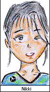
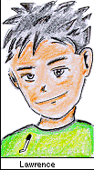
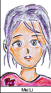
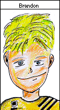
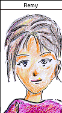
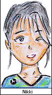
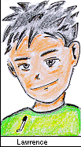
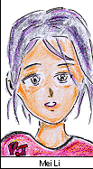
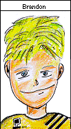
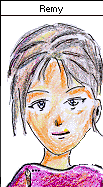

|  |  |  |

|  |  |
|  |  |  |
|  |  |
Well, here we are..... The 1998 Super Computer Challenge Team. Creating this site was a team effort; it required countless hours of arguments, decisions, fits of banging our heads against the wall, and cries of "Mrs. Hodaarrraaaaaa !" Aside from the computer, however, we are individuals. The pages presented here are our personal web sites, designed to give you an idea of who we are. Click on our faces to see our pages.